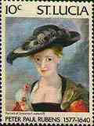
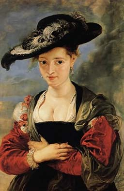
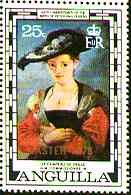
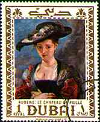
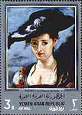
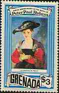
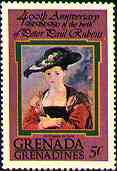
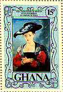

Portraits of Rubens and of His Family on Stamps
← Recently Modernized Pages · Art Gallery · Home

Le Chapeau de Paille
Painted probably 1622 - 1625. The full title of the painting is Portrait of Susanna Lunden (?) (Le
Chapeau de Paille). Wood (oak), 79 x 54 cm. Conserved at The National Gallery, London,
UK. It was purchased in 1871 and represents one of the most admired
masterworks of the renown Gallery.
The title Le Chapeau de Paille, meaning The
Straw Hat, was first used in the 18th century. In fact the hat is not straw,
paille may be an error for poil, which is felt. The hat, with
its curling feathers, is the most prominent feature of the painting, shading
the face of the sitter.
 |
 |
 |
 |
 |
She is probably Susanna Lunden, third daughter of
Daniel Fourment, an Antwerp tapestry and silk merchant. Susanna married
Arnold Lunden, her second husband, in 1622. The portrait probably dates from
that time.
The direct glance from under the shadow of the hat,
the attention directed to the body, and the ring on the finger, all suggest
that the painting is a marriage portrait. By setting the picture outdoors,
Rubens gives himself the opportunity for a virtuoso depiction of the effects
of light, especially the reflected light in the shadows of Susanna's face.
|
 |
|
  |


Rubens's portraits were very popular in the 18th century. Close variants were painted by many painters, including the "Self Portrait in a Straw Hat", by Elisabeth Vigée Lebrun, after 1782, National Gallery, London. It is a free imitation of Rubens' "Chapeau de Paille", which the artist has seen in Antwerp. The painting appears to be an "autograph" replica of a picture, the original of which was painted in 1782. The painter wears a real straw hat. (After Microsoft Art Gallery, 1993)
Background: The Four Continents, Fine Arts Museum in Vienna, Austria
Links:
-
Other Flemish Paintings on this site: Rembrandt, Rubens-1, Rubens-2, Vermeer, Van Gogh
-
Biographical data about Flemish Painters
-
Hermitage Museum